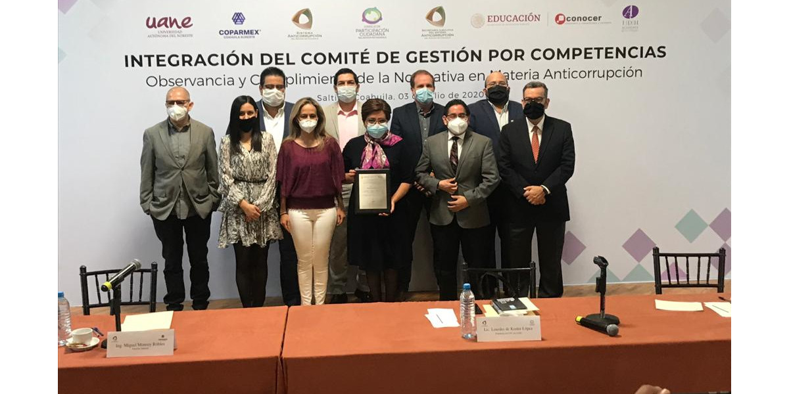
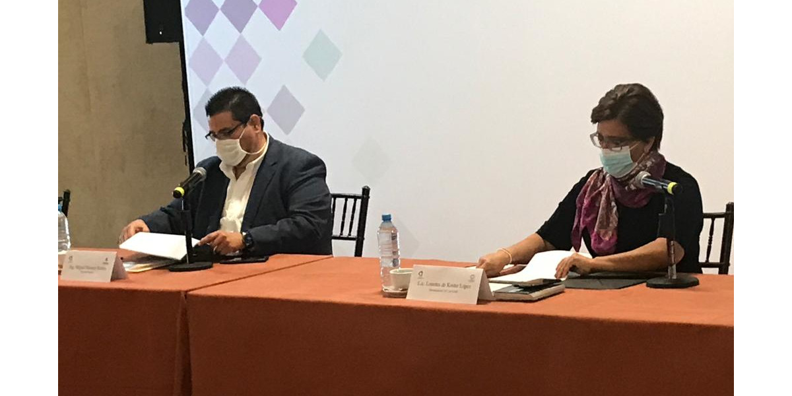
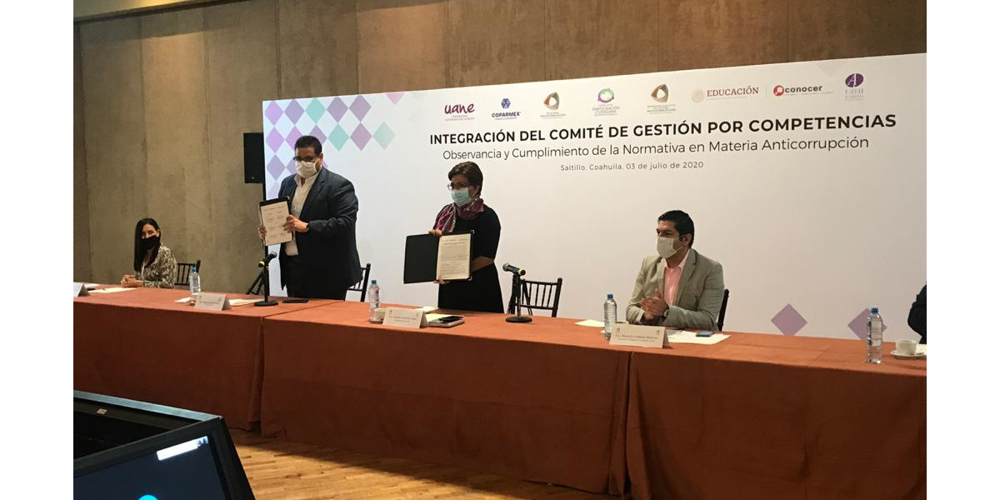

Instalan Comité de Gestión por Competencias en Materia Anticorrupción
SEA Coahuila - 03 July 2020

03 de julio de 2020, Saltillo, Coahuila.
INSTALAN COMITÉ DE GESTIÓN POR COMPETENCIAS EN MATERIA ANTICORRUPCIÓN
CERTIFICARÁN A FUNCIONARIOS Y EMPRESAS DE COAHUILA EN MATERIA DE PROVEEDURÍA DE SERVICIOS Y ADQUISICIONES
El Consejo de Participación Ciudadana (CPC) del Sistema Anticorrupción del Estado de Coahuila de Zaragoza (SAEC) y el Centro Empresarial Coahuila Sureste (Coparmex), instaló el Comité de Gestión por Competencias en Observancia y Cumplimiento de la Normativa en Matería Anticorrupción, validado por el Consejo Nacional de Normalización y Certificación de Competencias Laborales (CONOCER).
Con el objetivo de integrar al sector privado con el sector público, el comité quedó establecido el pasado viernes 3 de julio y certificará en la normativa que regula la materia de proveeduría de servicios e insumos a los funcionarios públicos y a las empresas.
Cada funcionario, pero también cada prestador de servicios, tiene la obligación de conocer el ámbito y contexto en el que se desarrolla diariamente así que este Comité de Gestión fungirá como fedatario que validará que los proveedores y contratistas de los gobiernos federal, estatal y municipal, así como los servidores públicos, se conviertan en expertos en el tema.
Además, con esta certificación se busca que ambos sectores cumplan con las leyes de Responsabilidad Administrativa, Adquisiciones y Contratación de Servicios, así como la Ley Orgánica de la Administración Pública, con el fin de evitar actos de corrupción.
Este Comité de Certificación estará integrado por el Centro Empresarial Coahuila Sureste (Coparmex), el Comité de Participación Ciudadana (CPC), la Academia Interamericana de Derechos Humanos (AIDH) y la Universidad Autónoma del Noreste.
El Consejo Nacional de Normalización y Certificación de Competencias Laborales (CONOCER) es una entidad paraestatal sectorizada en la Secretaría de Educación Pública que reconoce los conocimientos, habilidades, destrezas y actitudes de las personas, adquiridas en el trabajo o a lo largo de su vida, con certificaciones nacionales y oficiales.

